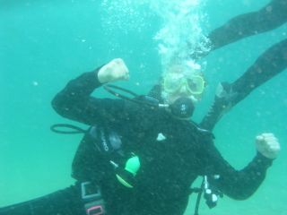

Обо мне
Залом я стал увлекаться еще в школе. Кумиры моего детсва были с накачеными телами. Залы в то время мало были похожи на современные, светлые и просторные , с прекрасным видом из окон. Залы раньше походили больше на заброшеные цеха или подвалы. Но атмосфера, которая царила в тех залах была неповторимой и по-домашнему уютной. На стенах висели плакаты с Мистерами Олимпия разных годов, ну и конечно же Арни с Сильвестром мотивировали пацанов на занятия этим прекрасным, но в то же время весьма травмоопасным видом спорта. В университете сдал нормативы на КМС по силовому жиму. Поскольку это было мое увлечение, поэтому не стал принимать препараты для результатов, а занимался для себя, Ставя свои "скромные" цели и достигая их. Сейчас иногда беру шефство над "новинькими" объясняю как правильно выполнять то или иное упражнение. На это я имею право, т.к. еще учась в университете, закончил курсы в БГУ Физкультуры по бодибилдингу.

Увлечение спортивным залом является как дверь в прекрасный мир "физических нагрузок". Вообще любому отдыху "стандартному"(за столом или на пляже ) предпочитаю активный отдых. Дайвинг, пейнтбол, скалолазанье, катание на доске и, надеюсь, прыжки с парашютом все таки доберусь.
На море основным отдыхом является активный. Никогда не понимал, как можно просто лежать и загорать...
Помимо физического развития, всегда интересовался диетологией, поскольку физическая форма человека на 70% зависит от того, что он ест. Расчитываю и составляю меню для похудения или для набора массы тела.